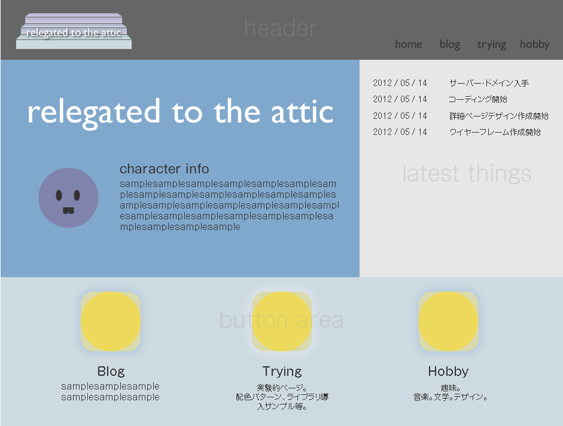
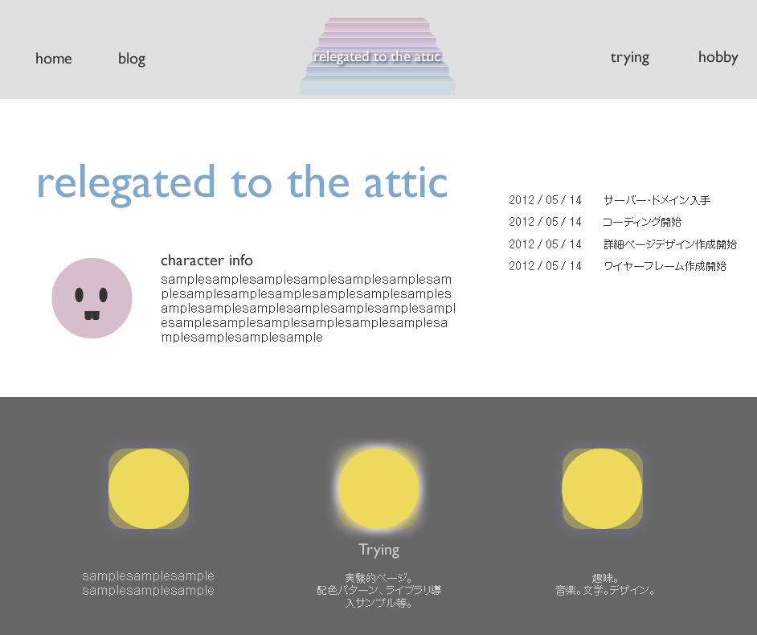
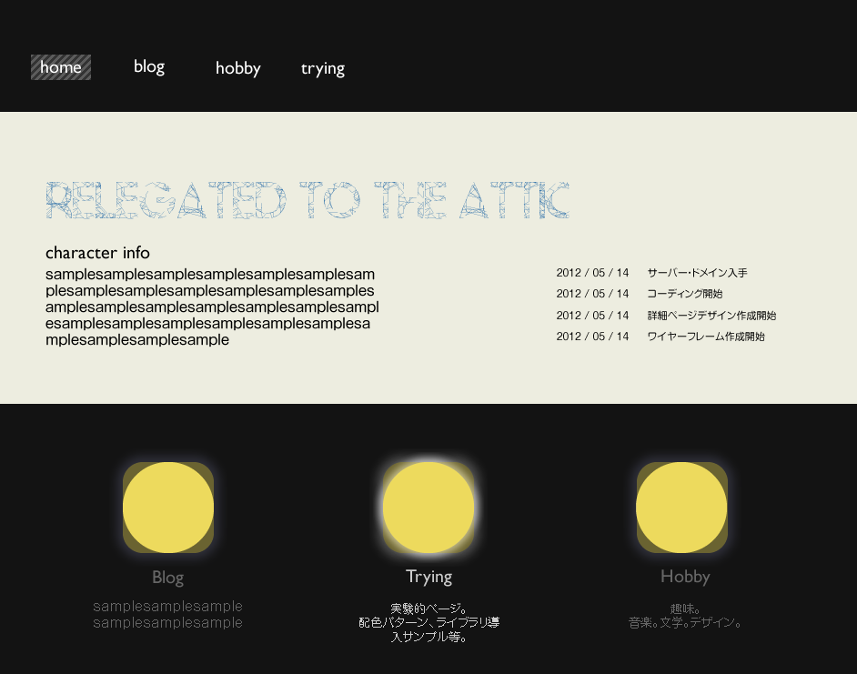
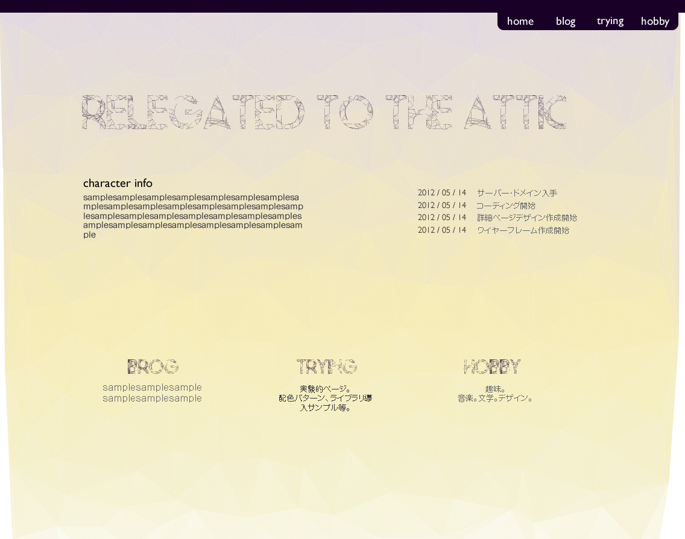
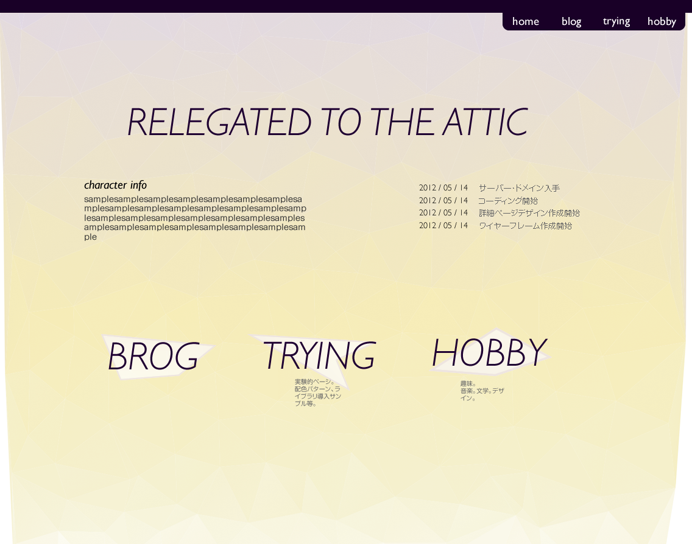
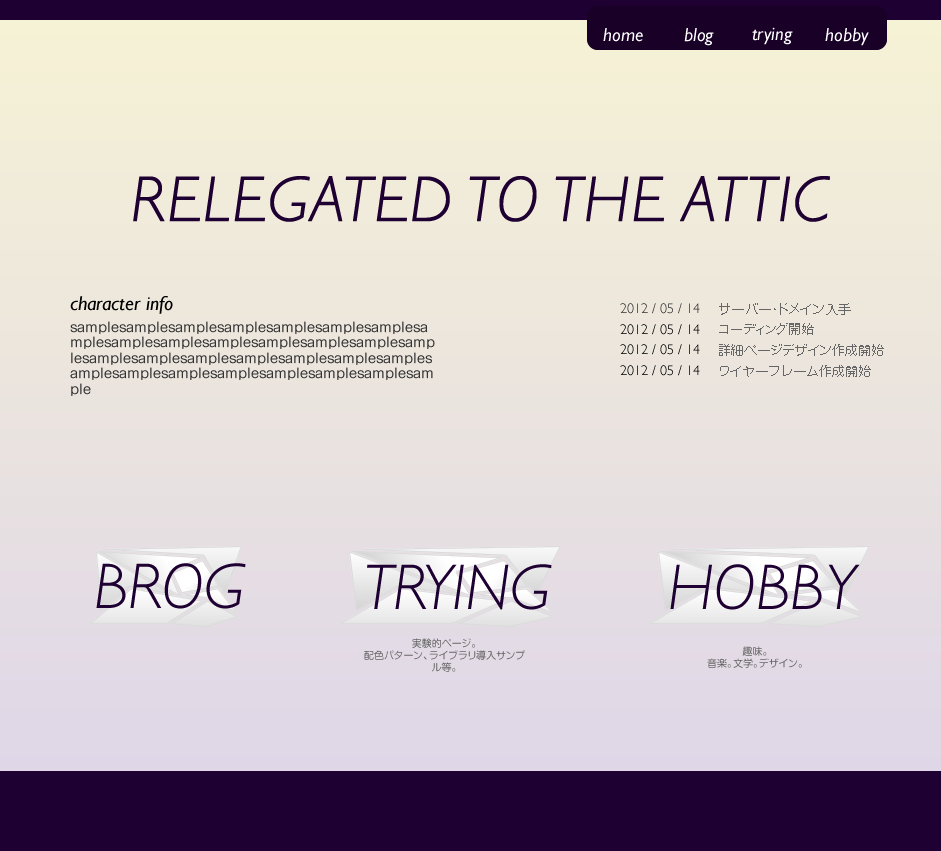

2013/06/20
本サイトトップページデザイン案
-

ぺーぺー編 ①
初めはWFを作って、それに色付けして、適当にボタンやらイラストらきしものを作っていれてみた。
- RELEGATED TO THE ATTIC〜屋根裏部屋のイメージ＝階段でロゴを作成。
- はずみで作ったニヒルな出っ歯ちゃん
- のっぺり感
- 色の組み合わせ自体はいいかもしれないけど全体としてぱっとしない
- ワイヤーフレーム感から全然抜け出せていない
-

ぺーぺー編 ②
色だけ変更・・
- 屋根裏部屋、ということで暗い中の電球というイメージを作ってみたかったんだけどあまりうまくいかなかった。
- のっぺり感は変わらず、ぱっとしないまま。
- そもそも、モノクロにパステルカラーっていう組み合わせが良くないかもしれない
-

ちょっとマッシュアップ
ペーペー感を脱するため、配色にメリハリをつけてみた。
- ここで、人に意見を聞いてみたところ、個人のページにしては配色がドラマチックすぎるとのこと。
- 結構気に入っていたんだけど、配色とフォントの組み合わせが悪い。ここで差し色を黄色だけにしてしまえばうまくいったのかもしれない。
-

ゴールに近づく ①
画像をモザイク化して、"ポリゴン風"にするサイト（→）をみつけ、楽しくなる。
夕焼けのオレンジ〜紫を使いたい。（Coachella Fesのwebcastを見た影響）- まず、背景画像がうまく作れなかった。色合いと亀裂の数のバランス・・。
ビビットなカラーで作ったほうがきっと綺麗。 - そもそも、これで背景を作るべきではない・・
- いい加減このフォントはあきらめろ
- まず、背景画像がうまく作れなかった。色合いと亀裂の数のバランス・・。
-

ゴールに近づく ②
背景が綺麗な色合いなので、もっとシンプルにすることにした。
- やっと例のフォントを諦めた。よく諦めた自分・・！
- ここで、ボタンの後ろにガラスの破片風模様を取り入れる。もっと透明感を出したかったけどとりあえず現状維持。
-

ゴール！！
とりあえずの完成形。
- ポリゴン風背景は諦めて普通のグラデーションにしたらスッキリした。
- どこまでシンプルにするか迷ったけど、とりあえず中身を作らなければ始まらないのでここでストップ。
-
総括
このデザインを元に一旦本サイトを作成し、WordPressもそれに似た形で作成。
ただ、中ページを作成しよう、となった時点で、トップページ→カテゴリトップ→子ページというページ遷移がうざったいと感じたため、
今の形（トップページから直接子ページヘ）に。
ガラスの破片風もそろそろ飽きそう、いや、諦めそうな予感がしている。
今回一からデザインするのは初めてで、楽しかった。
やっぱりまだイマイチ素人感が漂う気もするけど、これからどんどんいろんなパターンを作って行きたい。
自分の好きなようにデザインし始めた少し後から仕事で初めてのデザインとなり、今回の経験が少しは生かされた。
（ちなみにそっちはコンセプトをなぞって結構それっぽくできたと思う。）
今回迷走した理由の１つにはコンセプトがちゃんと決まっていなかった、というものがあったと思う。
直感だけではデザインはできない！ということ。
{kind=link}
{kind=link}
{kind=link}
{kind=link}
{kind=link}
{kind=link}